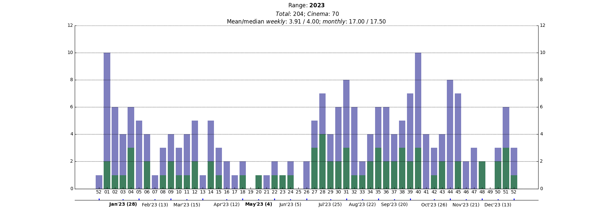

2023 in Review
I love watching films, but I also love collecting data about my movie-watching and looking at it, computing fun things about it, etc. It makes me reminisce about all the great films I've seen and the wonder of it all.
Here I'll summarize some of the data analysis stuff for 2023 as well as look into the films I watched in 2023 that I loved the most. It's the first time I'm writing such a review and let's see how it goes.
2023 has been a great year film-wise for me. There were many great movies released and I also saw many, many old great films for the first time. Also I never saw so many filminhos (just a few more than in 2017, the previous top year[0]), and, specially, never saw so many in movie theaters (70! It had never been more than 40 before). I was also happy that I managed to write a bit my impressions about almost all the films that I saw, a good indicator that I did not have long "outage" stretches where I did not have the energy to timely log and write about the films I was watching (there were a few of these outages, but I generally recovered in time to still write about them).
The Journey ⋅ Highlights ⋅ Miscellaneous ⋅ Best First Watched in 2023 ⋅ Best of 2023
The Journey
The overview of my movie watching in 2023 is summarized in the plot[1] below. The green bars are for films watched in a cinema. In the X axis by the names of the months are the number of watched films in that month, with the max and min months in bold.

I started strong in January (consistently a strong month for me) with 28 films (second-best only to January 2019, when I saw 33 films[2]!) and kept a good average through April: about 3 movies/week after Jan, with the average sitting close to 4 by the end of April. Generally my goal is to see about 4 movies a week on average, so it was going great.
Then came what I'll call the DARPA months, when at work (see my work page) I was writing two project proposals in a call by DARPA, which was much more work than I anticipated and kinda took over my life, to great personal suffering, of which me watching only 9 films in two months is but a symptom (one of the proposals got through, at least!).
I bounced back in July greatly helped[3] by a big sci-fi series ran by the Cine Humberto Mauro in Belo Horizonte, with a lot of old favorites of mine. I kept the momentum in early August helped by vacation and that continued as I went back to work, thanks to more free time for movies available due to my wife going abroad for the rest of the year and for three months without traveling for me[4]. From July through November my weekly average was 5.22, my highest ever 5-month average!
The year wrapped with a lot of travel and less movies watched, but I took advantage of a week home in mid-December to catch-up on films that were in theaters and an Ozu series going on at Cine Humberto Mauro. It's been wonderful. Here are all the films I saw in 2023.
Highlights
Note: The cards below have the date relative to that watch of the respective film and the rating I gave to that watch[9]. The circled arrows say that watch was a rewatch. In grey there are tags for things like where I saw the movie, if I cried, if I was traveling, etc.
Rewatching Drive my Car and Memoria
This year I discovered a new cinema in Belo Horizonte (it opened midway through 2022 and I didn't know), which is part of Centro Cultural Unimed-BH Minas and has great (i.e., not like the mainstream-restricted cinemas in shopping malls) programming. Early in 2023 they did sort of a "best of 2022" series, which had my two favorites films from 2021: Drive my Car and Memoria, respectively (impressions here and here).
It was a delight to see them again in a movie theater and to get to know this new venue in BH. BTW these are all the movies I saw there this year: link.
Rewatching Portrait de la Jeune Fille en Feu in its Criterion edition
In 2023 I started a journey of collecting films in blu-ray[5]. I went to the US in February and took the opportunity to buy some editions from the Criterion Collection, among them one of my favorite films ever: Portrait de la Jeune Fille en Feu. The edition is beautiful and it was a delight to watch it. I had been afraid that I might not like it as much watching at home, after having only seen it in theaters, but that was foolish of me. The power of this film cannot be contained.
2001 in a cinema
One of the films in the sci-fi series by Cine Humberto Mauro was 2001, another of my favorite films ever. I had seen it in a cinema for the first time in 2018 at Iowa City, and that was pure bliss. I was thrilled to get to see it again in a cinema and, again, it was pure bliss. But for the first time the film made me cry. I really felt for HAL.
Oppenheimer in 70mm
Oppenheimer was the first film I ever watched in 70mm! I had a work trip to Norway in July and took the opportunity[6] to see it in Oslo on the way back home. With the release of Oppenheimer and the hype around the film's format I learned more about the whole thing with formats, film vs digital etc, and I was really hooked-up on the idea of watching something in 70mm film for the first time.
It was a great experience, starting with the theater: I saw it in the Oslo Cinemateket, a beautiful place. I absolutely loved the film and regarding the format at first I did not really notice anything in particular, but in time I became conscious of how every shot was impressive, merely by means of being there.
I'd end up watching Oppenheimer four times in theaters, the other times not in 70mm but at least in digital IMAX, which actually had better sound. The last time I saw it I even bumped the rating to low 9, and it currently sits second place in my Best of 2023 list.
Funnily enough, this was also the 100th film I watched in 2023. The only time I was faster to reach 100 watched films in a year was in 2019 (a year in which I kept a 5 movie/week average through June before being totally derailed by traveling for work and moving countries).
The Grand Budapest Hotel in a cinema
Another great series that Cine Humberto Mauro ran in 2023 was a Wes Anderson retrospective. I took the opportunity to watch The Life Aquatic with Steve Zissou for the first time (and loved it) and to rewatch The Grand Budapest Hotel and Isle of Dogs. The latter I quite liked again, but the former I loved much, much more than I had before. It is such a beautiful, funny, carefully constructed film. Seeing it in the big screen played a factor also, I believe.
Overall 2023 was The Year Of Wes Anderson for me: I watched his films seven times in a cinema and absolutely loved The Swan and Asteroid City (currently third and fourth in my Best of 2023 list).
Oldboy in a cinema
Another of my favorite films. I was thrilled when the 4K re-release of Oldboy was announced and even more so when I realized that it'd show in cinemas in Belo Horizonte. I went twice (thoughs of the first time, thoughts of the second time) and it was everything I could have hoped for. Perfect cinema.
Memories of Murder in its Criterion edition
I love Bong Joon-ho and my favorite of his films already was Memories of Murder before I set to rewatch it in the gorgeous Criterion edition. I had the time of my life. The quality of image and sound was astonishing. Perfect cinema. Insane that both this film and Oldboy were made and released at roughly the same time in South Korea.
One of the side effects of the transcendent experience I had rewatching Memories of Murder in its Criterion edition was that it completely converted me into a believer in physical media not only for collecting but also (and now specially) to have the maximum possibility quality of image and sound for film watching (at home), and it led me to start buying blu-rays also of films outside the Criterion Collection.
Miscellaneous
- One thing I tried in 2023 was to reduce the overwhelming dominance of US films[7] in my movie watching. Historically it has been close to 70%! In 2023 it ended up being 58% (118/204), my lowest ever, so that was nice. On the other hand, I tried to up the percentage of Brazilian films and that basically failed, with only 4.5% (9/204) of the total (which is sadly a record though).
- In 2023 I watched 24 films directed by women, another sad record. Something else to improve this year.
- I watched 9 films in planes, second to 10 in 2018. I never flew as much as in 2023, but that was also the year I got into movie podcasts and I listened to them a lot in flights, so that's probably why I didn't top 2018.
- I never saw so many films in IMAX (all of them digital, unfortunately) as in 2023. I went 12 times, compared to only 3 times in 2022. It is always worth it because the sound is so much better than in any other theater.
In 2023 there were 39 days (generally in the weekends) in which I watched at least 2 films, 11 of which were 3-films days. In 2022 there were 26 2-films days, and only three 3-films days.
Yearly my average of 2-films days is about 30, so 2023 was an outlier, together with 2017, which had 37 of them. That was also a very strong year, movie-watching-wise.
Overall I've had four 4-films days: 2017-10-22, 2019-01-05, 2019-01-12, and the single 5-films day 2018-03-03.
- I love the Criterion Channel with all my heart and in 2023 I was committed to watch more movies in it. That worked well, and I ended up watching 42 films (21% of my movie total), the previous maximum (the service started in 2020) being 28 in 2020 (20% of the total, in a slow year). I tried to lean more in their special series and I particularly liked their '70s Car Movies series. I like car movies[8] and that series had sereval I did not previously know. There were some duds but overall it was quite fun.
- One of the things I wanted to do in 2023 was to go through the films available in the Criterion Channel of the Sight and Sound 2022 list of the greatest films of all time. Of the 52 films available (out of 250 in the list) in the beginning of the year, I had before 2023 seen only 11, and I managed to see only eight more. The first three of those I was actually a bit mixed on, but then it really took off, culminating in Tokyo Story, the top of my Best First Watched in 2023 list for older films.
- Comprehensive lists:
Best old (until 2020) films first watched in 2023
I like compiling the list of my favorite first watches of older films because there is so much I'm still catching up with and it can be so cathartic to discover these films.
No first watches in 2023 were more impressive for me than Festen, an outrageously funny, deeply disturbing, magistral film; and Tokyo Story, an irresistible film of such beauty and disarming sensibility that it left completely devastated.
In a sense both Irma Vep and The Graduate were revelations to me, as I never expected to like them as much as I did (impressions here and here). The other movies in the list are all somewhat haunting and striking, except for Certain Women, which is wonderful, beautiful, and had the great distinction of introducing me to Lily Gladstone. I loved it.
The list with the cards for the movies is available here.
Best of 2023
Note: As of 2023-01-05. The list will probably change as a I catch-up with some 2023 films I've not had a chance yet to see (Past Lives, May December, The Zone of Interest etc). The list in this link is kept up to date.

These are the best films from 2023 that I have seen, at the time of this writing. A really strong year, comparing with 2022, where my two favorites (here is a top 10), the all-encompassing RRR and the beautiful, beautiful Aftersun, were the only high 8's of the year, and there were no 9's. The year of 2023 has been comparable with 2021, a great year coming back from the similarly weak 2020, where my favorites were in a similar standing with ratings, but 2023 was more prolific in having films I really like (from high 7 up).
- Godzilla Minus One (2023, JP) A great time at the movies, and the last film I saw in IMAX in 2023. I really liked the film and its balance between drama and action that manages to involve us in the story, creating the necessary stakes for the (amazing, brutal) spectacle it provides. I also loved the soundtrack, to which I've been listening to very often since then (in fact, listening to it as I'm writing this).
- Retratos Fantasmas (2023, BR) A personal love story for one's own obsessions and the places where we belong. Touching and beautiful. It hit me hard. It was a joy to see it in a street cinema in Belo Horizonte, as it should be.
- Passages (2023, FR) A film that stayed with me since it swept me away. I loved walking home from the theater while reminiscing the film, thinking of Tomas riding his bike through Paris, forced to live with himself. It's a film that talks about the chaos of our lives and is very striking in no small part because of the leads, which are all amazing, with performances that I often catch myself thinking of.
- Anatomie d'une chute (2023, FR) Another film that stayed with me, thanks specially to the tenderness of the kid's performance who has the most heartbreaking scene of the film. Also, the first Palm d'Or I truly loved since Shoplifters, in 2018 (which was actually my favorite film of that year), and Parasite in 2019.
- Monster (2023, JP) And speaking of Kore-eda, what an absolute delight is to watch his films. I had not watched anything from him since the aforementioned Shoplifters in 2019, so it was great to see both Broker and Monster in 2023. I liked the former, but the latter... it is only rated low 8 because I disliked a significant chunk of it, but what I liked I absolutely loved. The absolute devastating ending has some subjective elements that make me really want to revisit the film.
- Spider-Man: Across the Spider-Verse (2023, US) Now we get to high 8's up territory[10], where almost all is forgiven given the sheer power of the film in front of me (lol). As Across the Spider-Verse unfolded I got a bit afraid it'd be one of the greatest films I ever saw (I was truly floored by its first segment), but things calmed down a bit. Amazing film that is only really hurt by not being a full film.
- Shin Kamen Rider (2023, JP) Utter shock. That's what comes to mind when I remember this film. I can still hardly believe that it manages to do what it does. A unique, astonishing film, that I poorly tried to describe when I saw it. Just watch it. But play it loud. This film demands it.
- John Wick: Chapter 4 (2023, US) The first film in this list that I saw in 2023. I was already sure in March, when I first saw it, that would be in this list. It's such an amazing film. I rewatched the John Wick series coming in to this one and I was skeptical after John Wick 3 that this one would be anything beyond a nice film. Well, I was happily proven wrong. I particularly loved how sound is used in the film. Loved, loved it.
- Asteroid City (2023, US) As I mentioned, 2023 for was for me the Year of Wes Anderson and his new feature was at first elusive for me (rated only high 7, lol), but it shot up to high 8 as I rewatched it and stayed there when I saw it a third time. It particularly spoke to me in my struggle feeling overwhelmed in 2023 and trying to carry on, to make it work even though I don't understand the play.
- The Swan (2023, US) Now this thing made something new for me: to rate a short. Normally I would not even log short films, but the series of shorts that Wes Anderson made in 2023 forced me to reconsider this. They have a unique artistry, identity, and, most importantly (to the purposes of this whole exercise), had a distinct impact on me. So I made peace with logging shorts[11] and went further with The Swan, a masterpiece. Given the whole situation, a bit afraid to revisit it though.
- Oppenheimer (2023, US) As I said in the highlights, I loved this film to the point of watching it four times in theaters. If it was still in theaters I'd watch it again tomorrow. I love Nolan and Oppenheimer is him at his best for building an irresistible narrative, filming gorgeously and adding killer sound. The tragedy of Oppenheimer the character was also very relatable to me, given the academic context and all. And the ending always breaks me.
- Killers of the Flower Moon (2023, US) My favorite film of 2023 is also the one I had the most expectations before going in to see. I have watched a lot of Scorsese in the last few years and have therefore grown to love him. Him being a champion of cinema of course helps. Fact is that Killers of the Flower Moon delivered, again and again, a magnificent experience. Sad, devastating, and magical. May Scorsese live forever.
And that's it. This year review ended up much bigger than I expected, what makes me afraid of managing to do it in the next years, but I guess the harder part was defining the structure I wanted and the HTML, CSS etc of it all. I liked doing it, so that's what matters. I hope that 2024 will be an equally great year for filminhos and for my movie watching, let's see!
0. ↑ I started seriously collecting data on my movie watching in 2015, so that's when history starts.
1. ↑ The bars equate the number of movies watched in the respective week, and I define a week as starting on Mondays. Week 1 of 2023 is the week starting on the first day of 2023 that is a Monday. Thus, since 2023-01-01 was a Sunday, the plot has to include the last week of 2022, of which that Sunday was a part of. But only the films watched in the 2023 part of that week, i.e., on 2023-01-01, are represented in the plot. Week 1 starts on 2023-01-02, as expected.
2. ↑ Probably thanks to an absolute awful winter that I spent alone in Iowa City, including a three-day period with -50°C!
3. ↑ Besides the end of the DARPA crunch as well as the end of the teaching semester at UFMG.
4. ↑ 2023 was a crazy year for me, traveling-wise. I spent 46 days away from home for work trips and 48 days in personal trips.
5. ↑ I got carried away and these are all the films I have gotten in 2023 (up to Interstellar). I started to get not only Criterion editions when I realized the big difference in quality that physical media provides, that I have no reasonable way of reproducing.
6. ↑ Alas, there are no commercial cinemas in Brazil anymore showing films actually on film, let alone in 70mm or in IMAX 70mm.
7. ↑ It is actually tricky to determine where a film "is from." If you take how Letterboxd does it, it lists the countries of a film based on the production companies involved in producing the film; all of them, indiscriminately. That will not do. I've decided to go the same way as the Academy of Motion Pictures goes, for films competing in the international category: "The submitting country must confirm that creative control of the film was largely in the hands of citizens or residents of the submitting country" (I only looked up this definition when writing this overview though, so we are only retroactively in sync, lol). So what I did was go through every film I watched since 2015 and tag them with the one country I think had the creative control, broadly defined (generally what country was most involved in the production and, if that was not very clear, where the creators of the film are from). It is a bit unsatisfactory sometimes to have only one country listed though, so I may revisit that in the future.
8. ↑ Letterboxd tells me the most common "movie theme" for me in 2023 was "Adrenaline-Fueled Action And Fast Cars", lol. Although only Le Mans is actually from the Criterion Channel series.
9. ↑ I rate films according to how much I liked them, which I equate to how good they are to me. In the past I have tried to be more objective ("I don't like this film but it's good because of this and that" etc but I think this is pointless for me, since I approach this as a hobby and the rating serves only me, basically). The rating goes roughly as
9 - Superb
8 - Great
7 - Very good
6 - Good
5 - Meh (aka "very flawed but kinda somewhat nice")
4 - Poor
3 - Bad
2 - Terrible
1 - Unimaginably awful
10. ↑ I started using "high" and "low" qualifiers in 2020, and ever since only 15% of the films I rate have had that rating or higher. That number is a bit skewed though because of the older movies I'm ever catching up with (and they invariably have a higher selection bias). Considering only films from 2018 on, the percentage is actually only 11%.
11. ↑ I will still take it one short at a time... I saw Civic the other day and did not log it, for example, since I don't think it left a proper impression on me to justify it. But Black Panthers did, so that I'll log... still unhappy about this lack of clear criteria though.